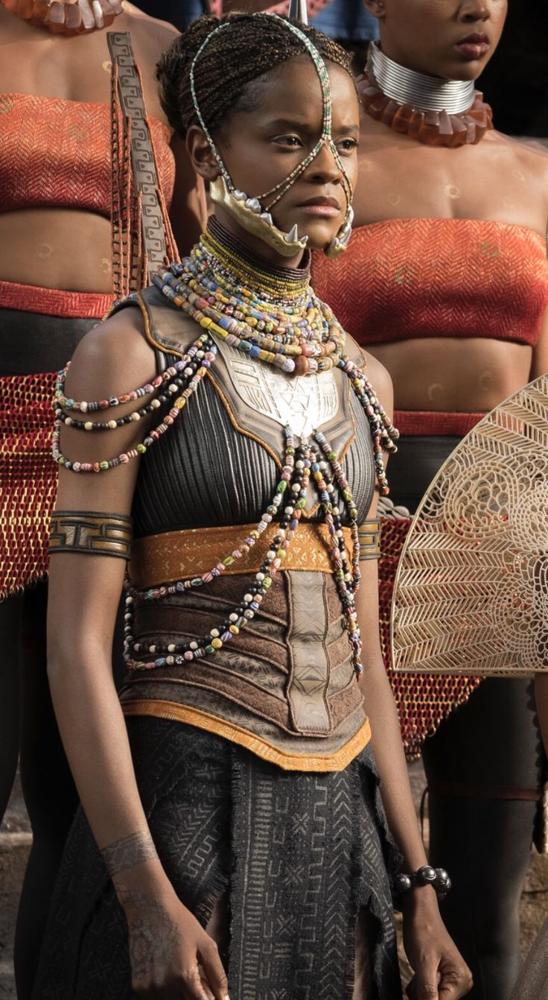
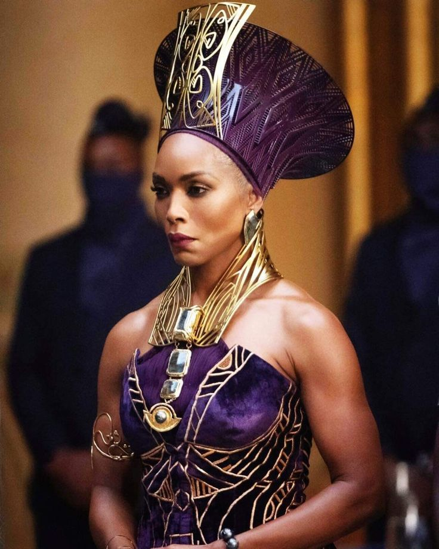
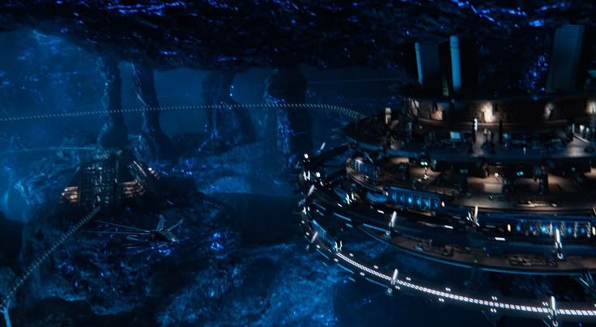

BLACK PANTHER
Le Wakanda, nation secrète d'Afrique, abrite une civilisation brillante. Son roi, T'Challa, porte le manteau du Black Panther - le protecteur du royaume. Héritier d'une longue lignée de souverains guerriers, il défend non seulement son peuple, mais aussi la paix dans le monde.

T'CHALLA / BLACK PANTHER. Roi du Wakanda — Protecteur du royaume.

SHURI Princesse du Wakanda — Génie scientifique.

QUEEN RAMONDA Reine mère — Conseillère du trône.
Caché derrière des montagnes impénétrables, le Wakanda est un royaume unique, fondé sur l'équilibre entre la nature, la science et la spiritualité. Son secret ? Le Vibranium, un métal extraterrestre tombé sur Terre il y a des siècles, qui alimente toute la technologie du pays : transports, médecine, armures et énergie. Grâce à ce métal, le Wakanda est devenu la nation la plus avancée du monde, tout en restant fidèle à ses traditions tribales, dirigées par des conseils de sages et de chefs.
Tout commença il y a des siècles, quand un météore de Vibranium s'écrasa sur les terres africaines. Le chef Bashenga fut le premier à recevoir la bénédiction de la déesse Panthère, Bast, devenant ainsi le premier Black Panther. Depuis, chaque génération a vu naître un nouveau gardien, choisi par les dieux pour protéger le peuple. Les cérémonies sacrées, les combats rituels, et les voyages au Plan ancestral (où reposent les anciens rois) font partie intégrante de la culture wakandaise.
Le Vibranium est l'élément le plus précieux du Wakanda. Il absorbe, stocke et redistribue l'énergie. Grâce à lui, le royaume a développé des trains à sustentation magnétique, des armes énergétiques, et une médecine capable de régénérer les tissus humains. La combinaison de Black Panther contient des micro-nanorobots qui se déploient en une fraction de seconde, rendant T'Challa aussi rapide qu'intouchable.
